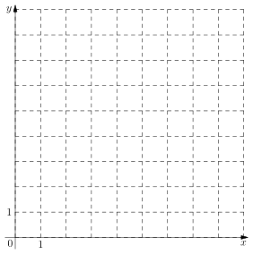
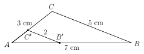

Contrôle sur le chapitre des évolutions
\begin{flushleft} \textsc{NOM} Prénom: \\ Classe:\\ \end{flushleft}Exercice 1 (\(6\) points)
Compléter le tableau suivant, directement sur l'énoncé. On ne demande pas de justifier. Arrondir au centime près pour les questions portant sur un prix, et au pourcentage près pour les questions portant sur les taux.
| Énoncé | Réponse |
|---|---|
| \(20\%\) de 400 euros | |
| Hausse de \(20\%\) de 400 euros | |
| Baisse de \(20\%\) de 400 euros | |
| Après une baisse de \(20\%\) on obtient \(400\) euros. Quel était le prix de départ ? | |
| Après une hausse de \(20\%\) on obtient \(400\) euros. Quel était le prix de départ ? | |
| De \(400\) euros au départ, un article vaut maintenant \(700\) euros. Quel est le taux de sa hausse ? |
Exercice 2 (\(1,5\) points)
On considère le repère donné à la figure 1.
- Sur le repère de l'énoncé, placez les points suivants :
- \(A = (2;1)\)
- \(B = (3;4)\)
- \(D = (8; 2)\)
- Question bonus : Le triangle \(ABD\) est-il rectangle en B ?

Figure 1 : Repère orthonormé
Exercice 3 (\(4,5\) points)
Un article a subi une hausse de \(20\%\), puis une baisse de \(70\%\).
Vous pouvez ajouter un schéma dans votre copie pour expliquer vos démarches.
- Quel est le coefficient multiplicateur associée à une hausse de \(20\%\) ?
- (\(0,5\) point) Même question pour une baisse de \(70\%\).
- On appelle \(x\) le prix de l'article au départ. Quelle expression \(E(x)\) obtient-on après la hausse et la baisse du prix de l'article ?
- Quel est le coefficient multiplicateur globale associé à la hausse de \(20\%\) puis la baisse de \(70\%\) ?
- En déduire le taux de l'évolution globale de l'article.
Exercice 4 (\(8\) points)

Figure 2 : Situation géométrique de l'exercice.
Dans la situation géométrique illustrée sur la figure 2, on a :
- \(AB=7\) cm
- \(AC=3\) cm
- \(CB=5\) cm
- \(C'B'=2\) cm
- \((C'B')\) est parallèle à \((CB)\).
- En rédigeant proprement votre réponse, trouvez les longueurs \(AC'\) et \(AB'\).
- Quel coefficient multiplicateur permet de passer des longueurs du triangle \(AB'C'\) au triangle \(ABC\) ?
- Quel coefficient multiplicateur permet de passer des longueurs du triangle \(ABC\) au triangle \(AB'C'\) ?
- Résoudre l'équation suivante : \[ 2(t+1)=5 \]